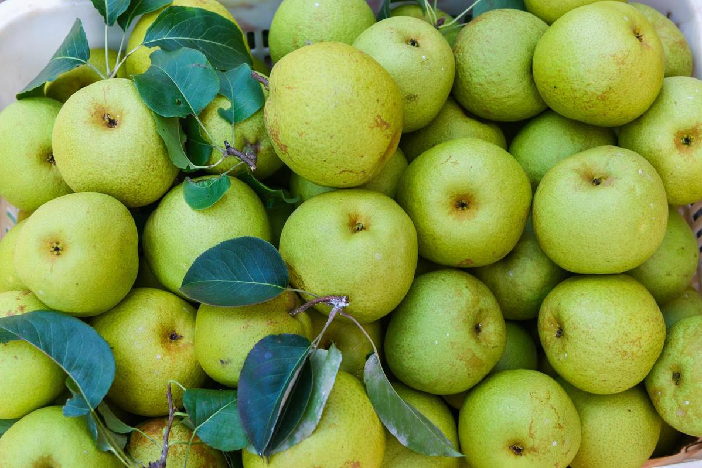
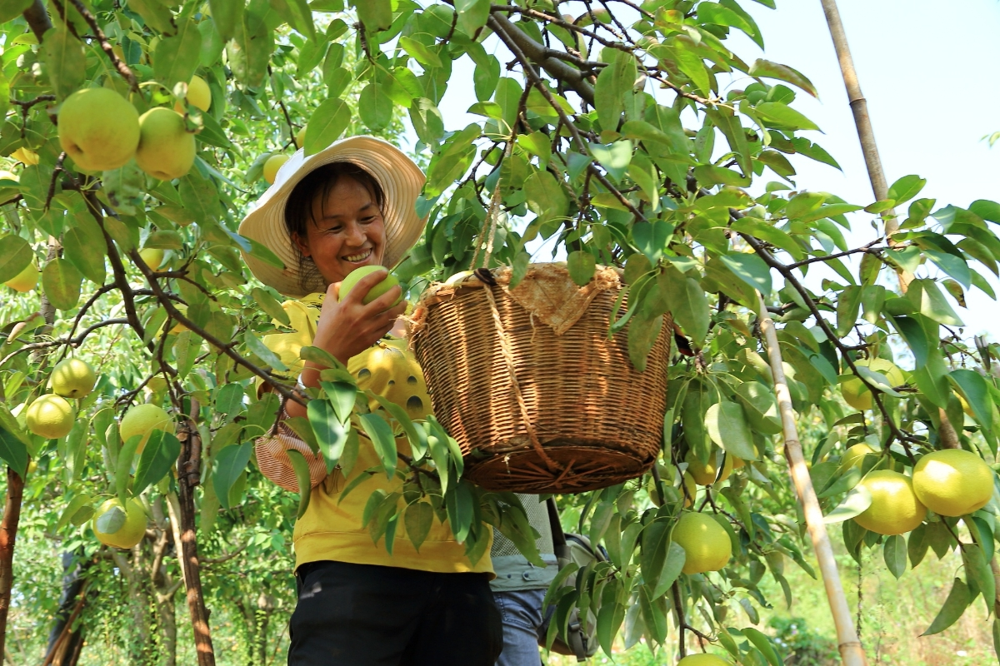
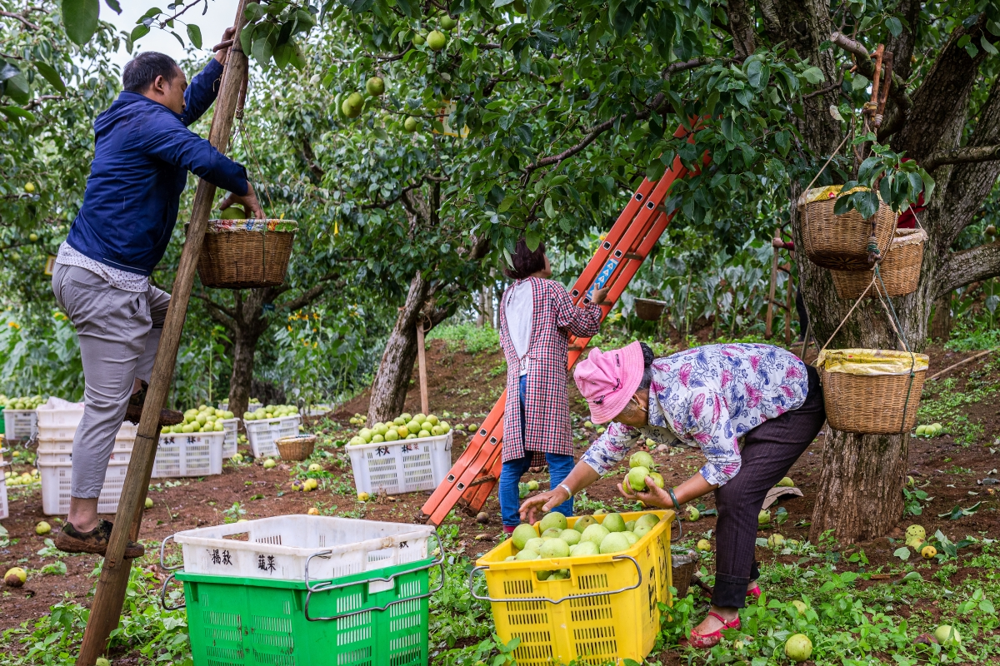
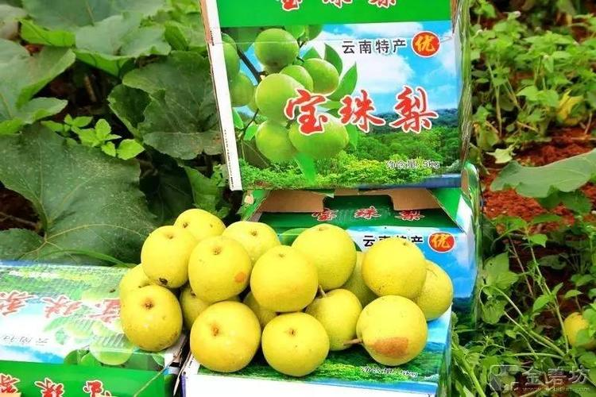
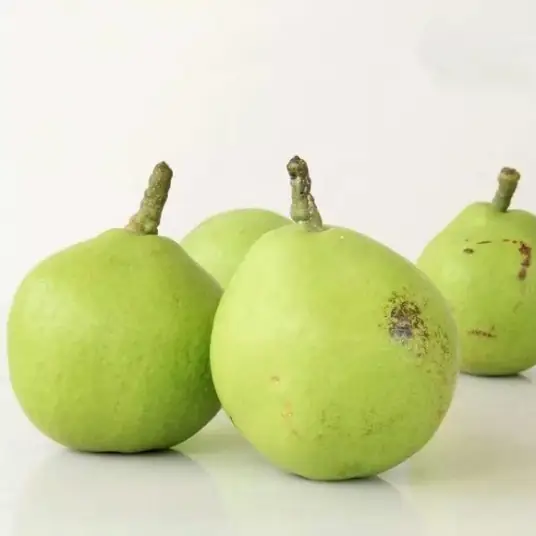

- 
- 
- 
- 
- 1
- 2
- 3
- 4
- 5
“宝珠梨是云南众多梨果中的佼佼者，果圆形，一般重200-330克，大者达500克，皮薄，淡黄绿色，果肉雪白，脆嫩，汁多，味浓甜，微香，食后无渣。万溪冲村隶属于吴家营街道，地处半山区。位于吴家营街道东南边，距离吴家营街道办事处10公里，国土面积9.95平方公里，海拔2020米，年平均气温13.70 ℃，年降水量769毫米，适宜种植蔬菜、水果等农作物。“

“宝珠梨是云南众多梨果中的佼佼者，果圆形，一般重200-330克，大者达500克，皮薄，淡黄绿色，果肉雪白，脆嫩，汁多，味浓甜，微香，食后无渣。万溪冲村隶属于吴家营街道，地处半山区。位于吴家营街道东南边，距离吴家营街道办事处10公里，国土面积9.95平方公里，海拔2020米，年平均气温13.70 ℃，年降水量769毫米，适宜种植蔬菜、水果等农作物。“